# 图像复原与重建
# 图像退化模型
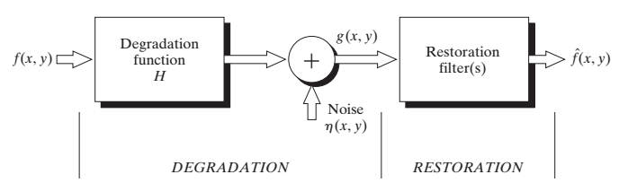我们将图像退化模型认为是，一个原（实际）图像经过一个退化函数（或者看为一个线性系统），再叠加上噪声，生成一个退化（观察）图像。而图像复原目的，就是希望退化（观察）图像经过一个复原滤波器，尽可能得到原（实际）图像的一个估计。如果关于和的信息知道越多，得到估计就越接近。
理解：整个图像复原过程就是对这个退化模型中H和求解，即去噪声和估计退化函数。
区别：
- 图像增强：使用主观标准改善图像
- 图像复原：采用与图像退化过程相反的过程来恢复图像，使用的是客观标准。
# 图像去噪声
图像噪声的来源主要是出现再图像获取和图像传输过程。例如在图像获取过程中，传感器受到自身和环境因素影响，又例如图像传输过程中因传输信道中干扰而污染。
# 噪声模型
噪声概率密度函数
利用对图像噪声分量的灰度值进行统计，将噪声灰度值认为是随机变量，则可以利用概率密度函数（PDF）来对随机变量进行表征。
高斯（Gaussian）噪声
PDF函数
其均值和方差为和
z的值有70%，落在，有95%落在
瑞利（Rayleigh）噪声
PDF函数
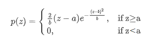
其均值和方差为：
- 距离原点的位移是a
- 函数曲线向右变形
伽马（Gamma）噪声
PDF函数
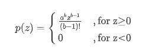
其均值和方差：
指数（Exponential）噪声
PDF函数

其均值和方差：
指数分布是伽马分布当b=1式的特殊情况
均匀（Uniform）噪声
PDF函数
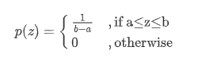
其均值和方差：
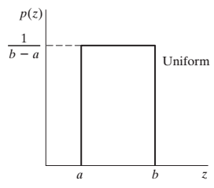
椒盐噪声
PDF函数

- 如果，则变成盐粒噪声；
- 如果，则变成胡椒噪声；
- 如果和均不为0，则称为椒盐噪声
几种噪声的应用：
- 高斯噪声：电子电路噪声和由低照明度或高温带来的传感器噪声；
- 瑞利噪声：对分布在图像范围内特征化噪声有用；
- 伽马、指数噪声：用于激光成像噪声；
- 脉冲噪声：用于成像中的短暂停留中，如错误的开关操作。
样本噪声图像及其直方图
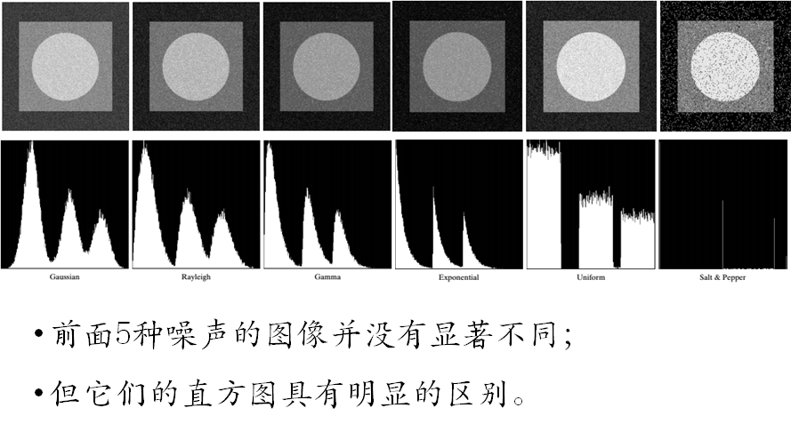周期噪声
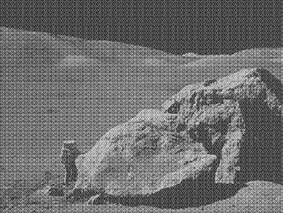周期噪声可以通过频率域来估计；
噪声的PDF参数：
- 传感器已知时，可以通过实验室估计
- 传感器未知时，估计算法相对复杂
- 参数估计算法包括：极大似然估计，矩估计等。
# 空间域去噪
均值滤波器
算法均值滤波器
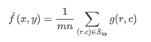
这一运算可以使用大小为m×n的一个空间核来实现，核的所有系数都是。
均值滤波平滑图像中的局部变化，它会降低图像中的噪声，但会模糊图像。
几何均值滤波器
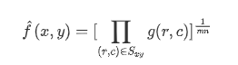
相当于每个复原的像素是子图像区域中所有像素之积的次幂。
理解为在对数虞上算术平均
谐波均值滤波器
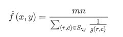
谐波均值滤波器既能处理盐粒噪声，又能处理类似于高斯噪声的其他噪声，但是不能处理胡椒噪声。
逆谐波均值滤波器
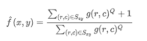
Q称为滤波器的阶数。这种滤波器适用于降低或者消除椒盐噪声。Q为正值，可以消除胡椒噪声；Q为负值，可以消除盐粒噪声。然而，不能同时消除这两种噪声。
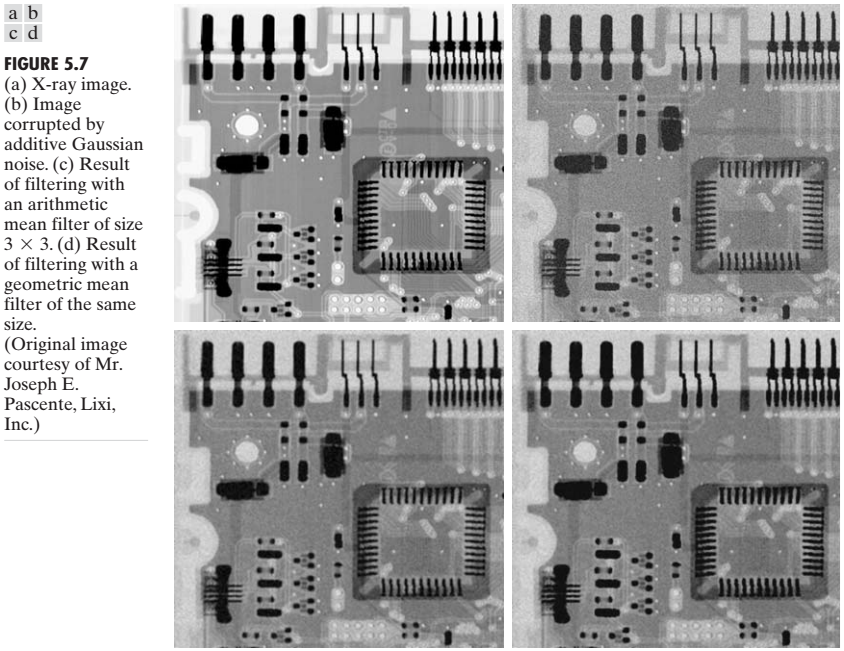 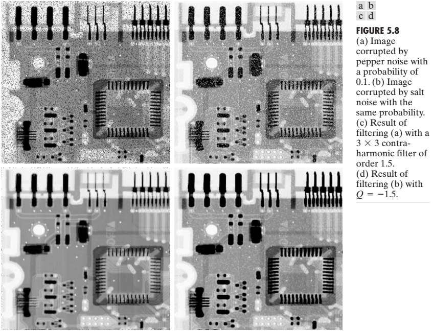Q=0时，转变为算术均值滤波器
Q=1时，转变为谐波均值滤波器
算术均值滤波器和几何均值滤波器适合于处理高斯或均匀等随机噪声；
谐波均值滤波器适合于处理脉冲噪声；
缺点：必须事先知道噪声是暗噪声还是亮噪声，以便于选择合适的Q符号。
顺序统计滤波器
中值滤波器
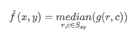
用一个预定义的像素领域中的灰度中值来替代像素的值。有效处理某些随机噪声。
最大滤波器
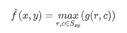
用一个预定义的像素领域中的灰度最大值来替代像素的值。降低胡椒噪声。
最小滤波器
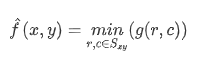
用一个预定义的像素领域中的灰度最小值来替代像素的值。降低盐粒噪声。
中点滤波器
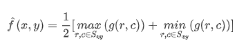
一个预定义的像素领域中的灰度最小值和最大值相加的一半来替代像素值。适合于处理随机分布的噪声，如高斯噪声或均匀噪声。
修正阿尔法均值滤波器
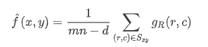
在领域内删除的个最低灰度值和个最高灰度值，在对剩下的个像素，平均这些剩余像素所形成的滤波器。
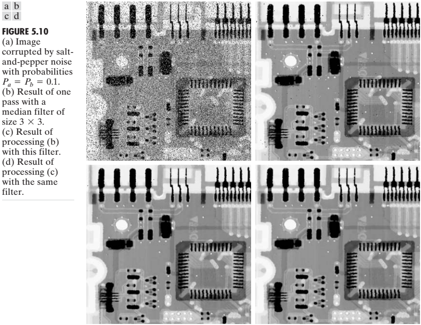 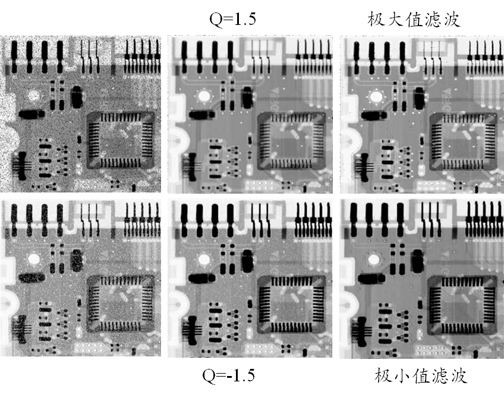当d=0时，退化为算术均值滤波器；
当d=mn-1时，退化为中值滤波器；
当d取其他值，该滤波器适合于多种混合噪声，例如高斯噪声和校验噪声。

自适应滤波器
自适应滤波器的特性，会根据m×n矩形领域定义的区域内图像统计特性变化而变化。
其优点是性能更优，缺点是复杂性也更高。
自适应局部噪声消除滤波器
一个随机变量的最简单统计测度是其均值和方差，这些参数是自适应滤波器的基础，因为它们和图像的外观高度相关。均值是计算平均值的区域上的平均灰度，方差是该区域上的对比度。
假设在以滤波器中心为的一个领域内：
- 噪声图像处的值为；
- 噪声的方差；
- 中像素的局部平均灰度;
- 中像素灰度的局部方差
那么自适应滤波器表达式即为：
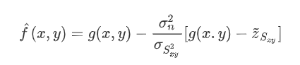
从表达式内可看出来
- 当噪声的方差为零，则滤波器返回处的值。因为没有噪声，返回图像本身即可
- 当局部方差和噪声的方差高度相关时，则滤波器返回处一个接近于的值。因为高局部方差常与边缘相关，且应该保留这些边缘。
- 若两个方差相等，则滤波器返回领域内像素的算术平均值。这种情况发生于图像局部方差和噪声的方差相同时，会平滑来降低局部噪声。
左侧是噪声图像，中间是算术平均滤波结果，右侧是自适应滤波器结果
自适应中值滤波器
自适应中间滤波在对图像滤波时，会根据某些条件改变（或增大）领域的大小。
假设在以滤波器中心为的一个领域内：
- 是中最小灰度值；
- 是中最大灰度值；
- 是中的中间灰度值；
- 是中坐标为的灰度值；
- 是允许的最大尺寸
自适应中值滤波算法，在点处使用两个处理层次，分布是层次A和层次B
层次A：
- 若z_{min}＜z_{med}＜z_{max}，则转到层次B；否则，增的尺寸
- 若S_{xy}≤S_{max}，则重复层次A；否则输出
层次B：
- 若z_{min}＜z_{xy}＜z_{max}，则输出；否则输出
从层次过程可以看出来
- 当条件z_{min}＜z_{med}＜z_{max}成立时，中间灰度值不可能是一个冲激，此时，我们转到层次B进行测试，确定领域的中心点本身是不是一个冲激。当其条件不成立时，增大领域尺寸，并重复层次A，直到算法找到一个非冲激中值。
- 当条件z_{min}＜z_{xy}＜z_{max}成立时，说明位置不是一个冲击灰度；当其条件不成立时，则有或，在这任何情况下，像素值都是一个极值，需要用中值来替代。
优势：
- 去除椒盐噪声;
- 平滑其他非脉冲噪声;
- 减少图像中边缘处的细化或粗化失真。
# 空间域滤波去噪的理论解释
根据我们图像退化模型内可知，观察图像是由经过退化函数后的图像和噪声图像叠加的结果。
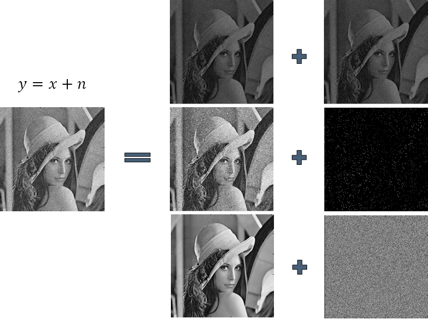一般来说，我们可将该问题归结于求解最大后验概率估计（MAP）问题。
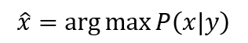
其中为原图像，是观测图像，是待估计图像。
由贝叶斯公式，可推导出，待估计图像求解为：
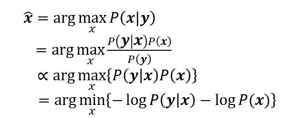其中是观测图像的概率分布模型，一般来说是已知的。是原图像的概率分布模型，一般来说是未知的。
接下来，为了求解，我们将马尔可夫随机场引入图像中，来得到原图像的概率分布模型。
Markov随机场
MRF是一类广泛使用的随机模型。一般可以用来描述空间之间的相关性。
其具备基本两个性质：
马尔可夫性
下一个时间点的状态只与当前的状态有关系，而与以前的状态没有关系；表现在空间上，即图像的像元点的取值，只与周边领域的像元点有关系，与整个图像没有关系。
用数据表达即为
随机场
- 每一个位置中按照某种分布随机赋予相空间的一个值之后，其全体就叫随机场
为了定性描述MRF，引入无向图来为其建模。
无向图
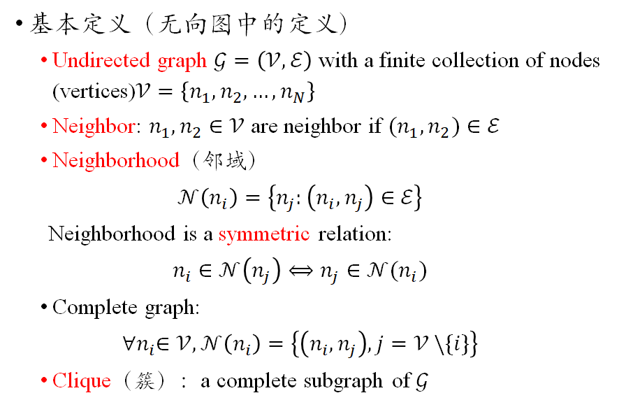
案例
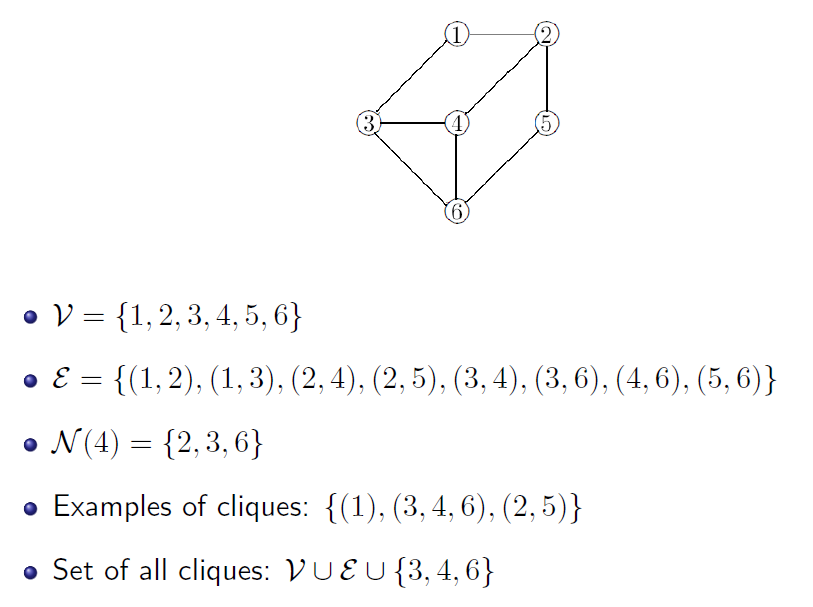MRF是一个满足如下条件的无向图
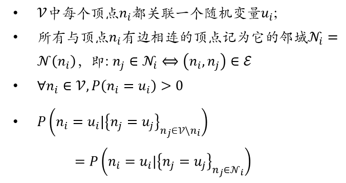 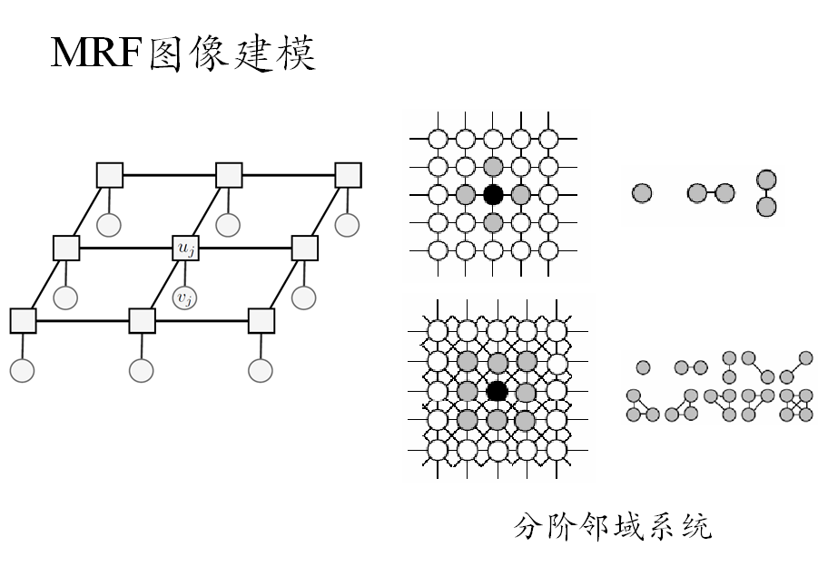Gibbs分布
1971年，Hammersley-Clifford定理给出了Gibbs分布与MRF的关系，从而可以用Gibbs分布求解MRF中的先验概率分布。
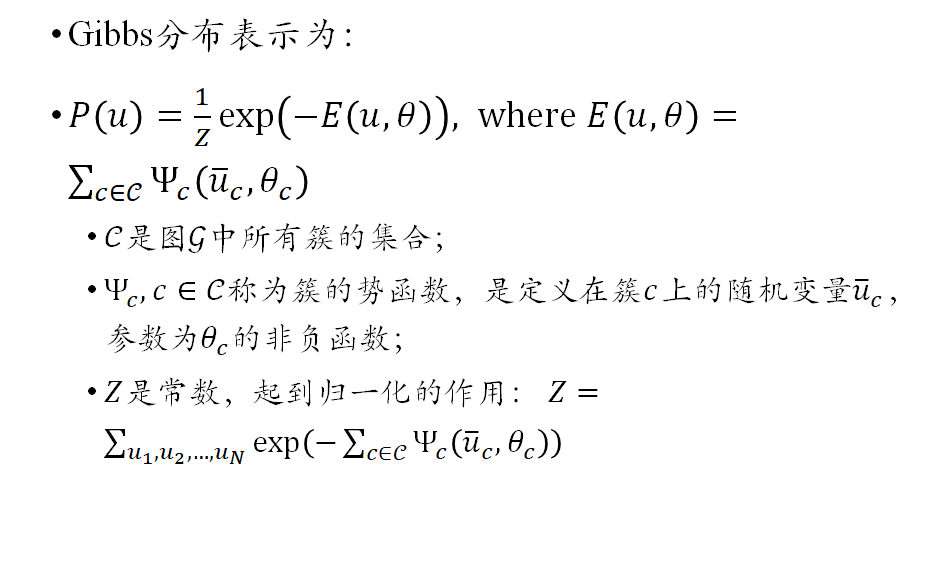

所以，将马尔可夫随机场引入图像中，可以得知图像的先验概率模型，即，可满足一个Gibbs分布。
最后就可以顺利，求解
以信号去噪为例
在1维情况下，实际信号与噪声叠加，得到观测信号，我们任务是估计原始信号。可以看到我们假设观测图像满足高斯分布，原始信号满足Gibbs分布，接着就是求解
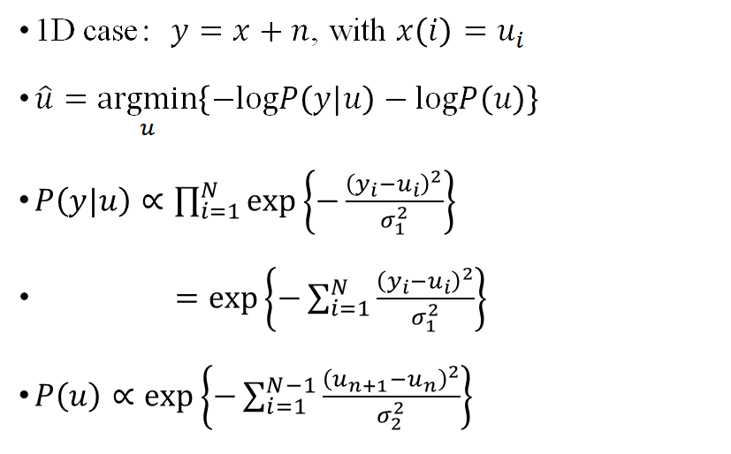接着给出能量函数，求偏导可得到待估计图像。
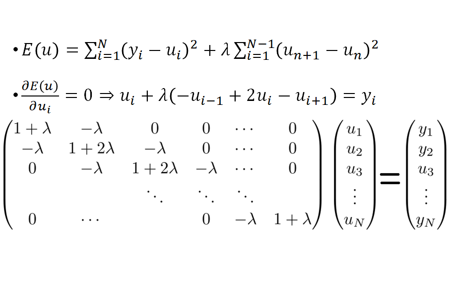然后我们从滤波角度来看待这个矩阵。
忽略边界条件，该矩阵等价于
其中
接着我们对该式进行傅里叶变换，根据卷积定理可知，其表达式为
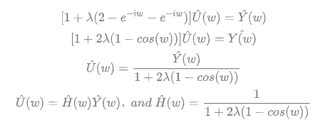
再做傅里叶逆变换即可得到
即可以看到信号去噪本质，即一个滤波器和观测信号卷积的结果。
同理，可以推导到二维上，图像去噪本质，即一个滤波器和观测图像卷积的结果。
# 频率域去噪声
这类技术的基本思想是，在傅里叶变换中，周期噪声在对应周期干扰的频率处显示为集中突发的能量。
一般方法是一个选择性滤波器来分离噪声。
- 低通滤波器
- 高通滤波器
- 带阻滤波器
- 带通滤波器
- 陷波滤波器
- 最佳陷波滤波器
# 图像去模糊
之前在图像生成模式中，引入线性系统，描述了成像过程。本处以图像退化模型，再次引入线性系统，再译成像过程。
图像的退化模型：
若将退化函数当成一个线性系统，则具备可加性和齐次性。
若对于任意及两个标量a,b，若
则称具有输入\输出关系g(x,y)=H[f(x,y)]的算子为位置（空间）不变的。这一定义指出，图像中任意一点处的响应只取决于该点处输入值，而与该点的位置无关。
根据二维连续冲激采用性质可知：
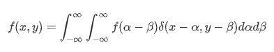
再假设噪声
则观测图像表达为：
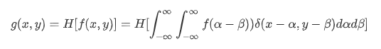
再根据线性系统的可加性和齐次性，则有
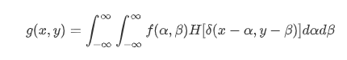
令，称为H的冲激响应。
由线性系统的位置无关的定理，可得到
于是乎测图像表达为
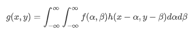
这个表达式告诉我们一个线性位置不变系统对于任意输入的输出，可由输入和系统的冲击响应的卷积得到。
最后叠加上噪声，利用卷积符号表达该式，即为
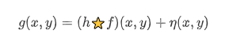
或变换到频率域，根据卷积定理，可表达为
从这个角度看待图像生成过程，图像变模糊的原因是由于原始图像与某个卷积核，经过一次卷积（暂时不看噪声项）所产生的。那么要对图像去模糊，基本思想就是对观测图像进行一次反卷积，即可得到待估计图像。
# 图像模糊的模型及分类
图像模糊按模糊核可分为：
非盲区模糊：模糊核已知。
根据模糊核类型，非盲区模糊又可细分为：
运动模糊（motion blur）：主要由于物体相对相机的快速运算造成。
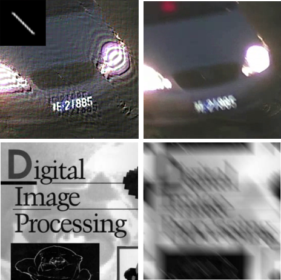离焦模糊（out-of-foucs）：聚集不准或者由于曝光时间较长，受大气散射的影响造成。
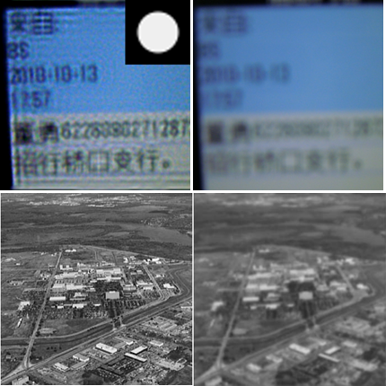
盲区模糊：模糊核未知
抖动模糊（camera shake）：在相机曝光过程中，物体和相机的相对运动造成。

没有显式的表达式，通常只能靠算法去估计数值形式。
# 图像去模糊算法
逆滤波（反卷积）
最简单的复原的方法是直接逆滤波，即用退化函数的傅里叶变换除以退化函数，来计算原图像的变换的一个估计。
再将退化函数频率域的表达代入，得到
这里具有两个问题，第一是噪声项是未知的，第二退化函数若为很小的值时，则比率很容易影响估计图像。
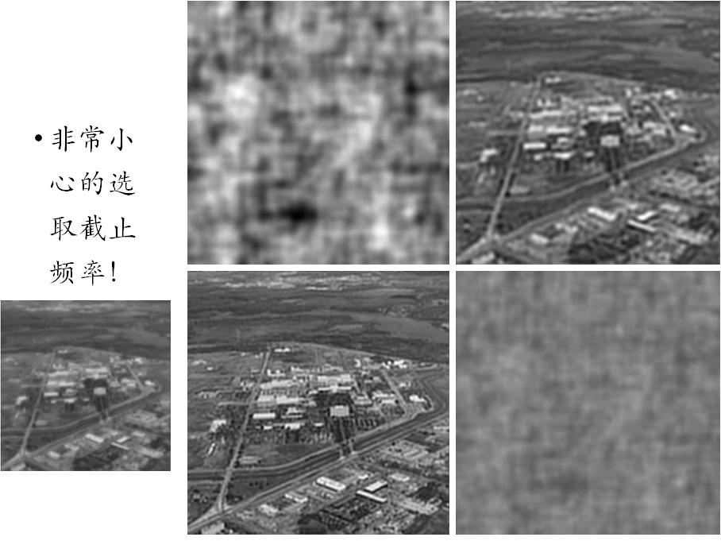可见直接逆滤波的性能效果一般来说比较差。需要改善直接逆滤波，以下三种方式均是改善方法。
最小均方差（维纳）滤波
约束最小二乘法滤波
几何均值滤波
小波域去模糊
# 图像超分辨率重建
使图像获得更高的像素密度，更丰富的细节信息，从而对客观场景的描述更为准确。
主要应用：
- 遥感图像处理
- 视频安全监控
- 军事航拍
- 医学影像分析
# 超分辨率重建模型
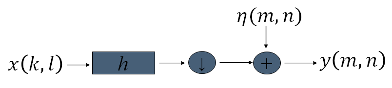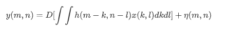
其中D为下采样操作，为噪声。
单帧图像超分辨率
用矩阵方式表达为：

多帧图像超分辨率
用矩阵方式表达为：
多帧组合，即得到估计图像
# 方法
超分辨率重建两个角度，第一个基于最大后验概率估计，第二是基于学习预测角度。
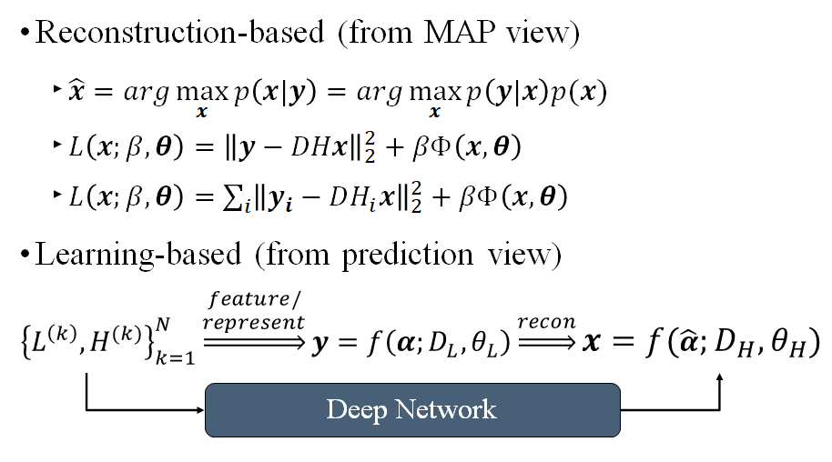基于重建的超分辨率重建
迭代反向投影算法（IBP）
凸集投影算法（POCS）
基于学习的超分辨率重建
- 变换域图像超分辨率重建
- 小波域图像超分辨率
- 基于PCA的人像超分辨率
- 基于空间域自相似的图像超分辨率重建
- 基于深度卷积网络的单帧超分辨率重建
- SRCNN
- VDSR
- Wavelet-SRNet
- SRResNet
- 变换域图像超分辨率重建
← 小波变换